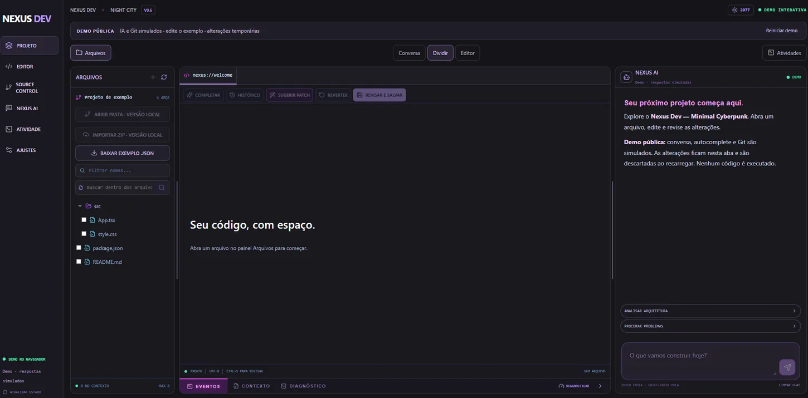
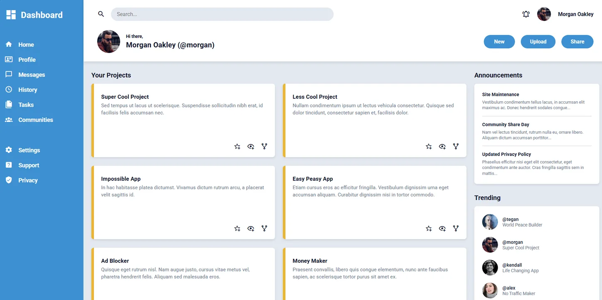

Nexus Dev
Ambiente de desenvolvimento com editor Monaco, recursos de Git e integração local com modelos via Ollama.
Analista de Processos e desenvolvedor em formação.
Crio aplicações web e mobile com foco em organização, experiência do usuário e resolução de problemas reais.
Aqui estão os projetos em que venho trabalhando e alguns exercícios do meu aprendizado. Em cada um, conto o que fiz e o que ainda falta melhorar.

Ambiente de desenvolvimento com editor Monaco, recursos de Git e integração local com modelos via Ollama.
Aplicativo React Native que se comunica com a API do GLPI para abrir, acompanhar, atribuir e tratar chamados.
Website de barbearia com identidade preta e dourada e fluxo de agendamento via WhatsApp.

Sign-up Form, Admin Dashboard e Recipes: estudos de HTML, CSS Grid e Flexbox.
Hoje trabalho como Analista de Processos. Antes disso, atuei com suporte e infraestrutura de TI, cuidando de chamados, sistemas e problemas que precisavam de solução no dia a dia.
Tenho estudado desenvolvimento Front-end e Full Stack e colocado isso em prática em projetos como Nexus Dev e HelpDesk Mobile. Gosto de interfaces simples de usar e de entender como cada parte de uma aplicação funciona.
⌘ Meu GitHub ↗Antes de abrir o editor, procuro entender o que precisa ser resolvido.
Estudo, testo, erro, corrijo e levo o que aprendi para os projetos.
A vivência com suporte ajuda a pensar em quem vai usar e manter o sistema.
Atuo na área de processos, aproveitando minha experiência em TI para entender demandas, rotinas e oportunidades de melhoria.
Trabalhei com atendimento de chamados, suporte técnico e administração de ambientes corporativos.
Atuei no apoio ao planejamento de atividades de elétrica e instrumentação.
Experiência profissional na área de almoxarifado.
Início da minha trajetória profissional como aprendiz na WestRock.
Graduação em Análise e Desenvolvimento de Sistemas na Estácio, iniciada em 2026.
Exercícios no The Odin Project e cursos de programação, backend e outras áreas, detalhados na seção seguinte.
Além da faculdade, venho fazendo cursos de programação, APIs, automação e outras áreas que uso nos meus projetos.
Os links levam aos arquivos dos certificados no Google Drive. O acesso depende das permissões de compartilhamento.
Se você tem uma vaga de desenvolvimento, um projeto ou quer trocar uma ideia, pode me mandar uma mensagem por aqui ou falar comigo pelo LinkedIn.
A versão React inclui páginas completas com desafio, solução, participação e resultado.
Voltar aos projetos ←